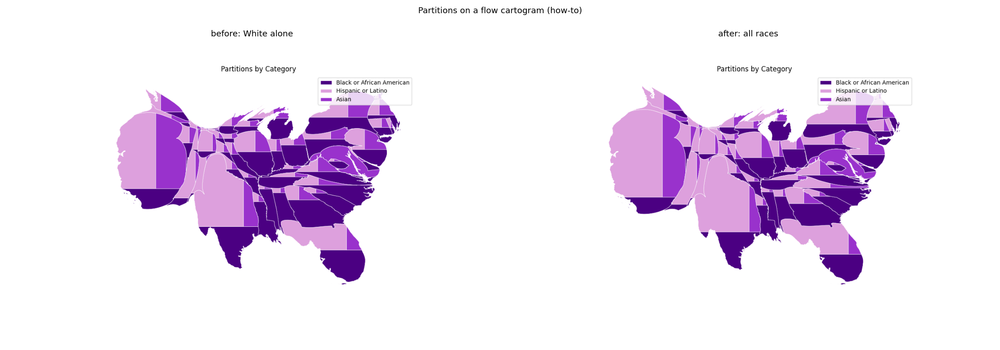
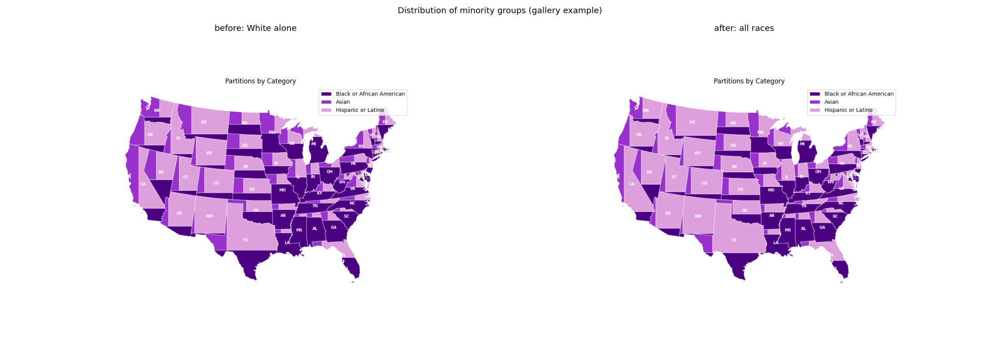

The column held Hispanic or Latino residents who reported White alone (B03002_013E); it now holds the Hispanic or Latino total. Look for larger Hispanic or Latino partitions, especially in the Southwest and Florida.
load_us_census(race=True) now maps Hispanic or Latino to B03002_012E (all races). White, Black or African American and Asian stay the non-Hispanic alone counts, so the four columns do not overlap. Both bundled snapshots had only that column replaced, using the Census API (ACS 2020 5-year, same geographies); all other columns, geometry, row order, schema metadata and zstd compression are unchanged.
| old | new | |
|---|---|---|
| top five | Puerto Rico 59.0%, New Mexico 33.3%, Texas 27.8%, Arizona 19.6%, California 19.5% | Puerto Rico 98.7%, New Mexico 49.2%, Texas 39.4%, California 39.1%, Arizona 31.5% |
| bottom five | West Virginia 1.0%, Maine 1.0%, Vermont 1.2%, Mississippi 1.6%, North Dakota 2.0% | West Virginia 1.6%, Maine 1.7%, Vermont 2.0%, Mississippi 3.2%, Kentucky 3.8% |
tests/test_data_module.py: the four groups sum to at most Total Race at both levels; California and Texas match the API values (15,380,929 and 11,294,257) within 0.5%; the national share excluding Puerto Rico is 18% within 1 point. The spot check fails on main; the sum check also passes on main, since a subset of a disjoint group still fits.uv run python make_figures.py from a carto-flow checkout. The "before" uses old_hispanic_white_alone.csv (old column, by state FIPS) in place of the bundled column.
How-to partitions-on-flow-cartogram (flow cartogram sized by the sum of the three groups), before and after

Gallery example plot_proportional_cartogram, before and after